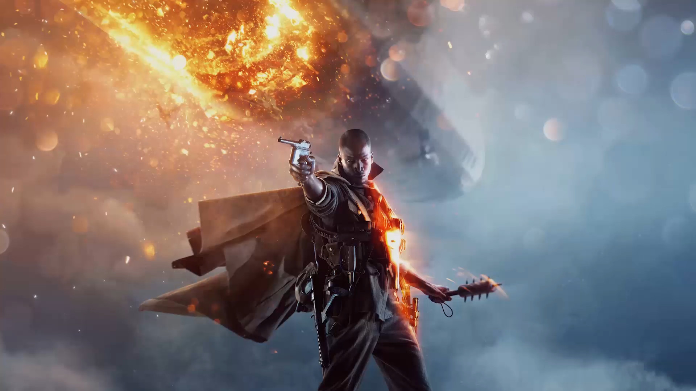

Template
Battlefield 1
Rating: 9
Singleplayer
Battlefield’s formula for large-scale, objective-driven warfare is as intense and theatrical as ever against the haunting, archaic backdrop of World War I. Battlefield 1’s single-player campaign is a short but pleasantly surprising anthology of small, human stories that does a good job spotlighting some of the key technology of the era.
But it’s the exhilarating multiplayer that most strongly capitalizes on the potential of this old-school arsenal, bringing a number of subtle changes that keep the combat balanced and smart while still allowing for the hallmark chaos that makes Battlefield such a fantastic first-person shooter series.
The Battlefield series has not been known for the quality of its single-player in recent years, so Battlefield 1’s campaign is a nice change of pace. The way each story juggles charm and tragedy in equal measure helps humanize the war and the people that fought it with quiet, welcome restraint. Overly simplistic objectives hold it back from being the memorable saga it could be, but a strong sampling of some of Battlefield’s most defining elements — like objective capturing and vehicular warfare — make it, at the least, a worthy primer for multiplayer.
Rather than restricting itself to one time, place, and character, Battlefield 1’s vignette-style approach to single-player allows it to touch on under-explored theatres of war that made up the nightmarish global campaign of World War I. Its short prologue and five “war stories,” each lasting about 30 minutes to an hour, took me on a harrowing journey from the bleak, muddy fields of the Western front to the sun-baked deserts of North Africa. Because of the wide leaps in both geography and chronology, the campaign never delves too deeply into the political complexities of The Great War. But interesting storytelling prevents it from feeling superficial — these vignettes are more interested in telling the human stories of World War I than delivering a bombastic history lesson, and they do so with mostly effective power and grace.
Storm of Steel, the prologue mission, sets this up with a tragic honesty. You take on the role of several members of the US 369th Infantry, an all-black regiment known as the Harlem Hellfighters. I was happy to see the historic importance of these soldiers, mostly made up of African-American and Puerto Rican-American men, recognized so early on, but I would have preferred to see their rarely-told tale saved for a full, character-driven mission.
As you and your fellow Hellfighters desperately try to push back the incoming German forces, you’ll meet death time and time again, but it won’t necessarily be your fault. Sometimes death is awkwardly forced upon you if you end up surviving longer than the script expects, because death is part of the plan. At least it’s handled poignantly. While Storm of Steel effectively works as a way to introduce you to some Battlefield basics — how to shoot, reposition, and reload — its grim reminders of World War I’s overwhelming death toll establishes the tragic tone.
This is a sad campaign — perhaps not quite the horror game that the devastation of the Great War deserves, but still one that confidently forgoes the patriotic pomp and war fetishization seen in most modern military shooters. That’s not to say there isn’t excitement or heroism — there is. But Battlefield 1 manages to capture the grit and valor of battle without being disingenuous. Each war story is grand in its smallness.
A Weak Beginning
The first story-driven mission, Through Mud and Blood, is by far the weakest when it comes to character, and the huge jump in quality that follows makes me wonder why DICE kept this one as the opening to begin with. The answer is probably familiarity — you play as Daniel Edwards, a young, inexperienced soldier part of a British Mark V tank unit pushing through German lines into Cambrai, France.
t’s not that the story is bad, but Edwards is painfully bland, as is his mission. Capturing points along the way to Cambrai serves as an easy primer for one of Battlefield’s most popular multiplayer modes, Conquest, as well as a how-to on operating tanks, but offers little else in the way of storytelling opportunities.
Edwards makes a cliche leap from a rookie struggling to operate the clunky Mark V to a one-man army who ends up bearing the brunt of his tank unit’s mission: going on foot to scout out enemy encampments, battling enemy infantry and FT-17s while his tank, Black Bess, demands repair, and finally holding out against waves of enemy vehicles in a wrecked trainyard. Not that the slow heaviness of the tanks isn’t fun — that last section in the trainyard is actually the first mission’s high point.
It’s a thrilling battle that had me desperately weaving my clunky Mark V in and out of cover, hopping out to repair with a wrench (a quicker, but consequently riskier alternative to repairing from inside), and swerving around my opponents to get a better shot of their tanks’ less-armored rears.
But perhaps more disappointing than this first mission’s story is its bugginess, something that was thankfully absent from the rest of the campaign. My first time through, I spent 15 minutes running around an empty battleground attempting to trigger whatever event would move me on to the next scene.
Eventually I realized that an enemy tank had gotten stuck on a trench near the edge of the level, halting the mission’s script. Another segment where you control a carrier pigeon should have served as a thoughtful diversion from the horror of war, but thanks to the weird controls, camera, and collision (I clipped straight through a building), it was sadly comical.
High Points
At first, I thought this bird segment was meant as a way to teach you how to operate biplanes, but that comes later, in the much stronger second level, Friends in High Places, which excels in both gameplay and storytelling. It’s a level that’s full of high points — figuratively and literally. You spend most of your time in the air as a cocky American pilot who has infiltrated the British Royal Flying Corps for his own amusement, and the chance to fly the Bristol F2.A biplane fighter. Flying any of Battlefield 1’s biplanes, in single- and multiplayer, is a freeing experience. They cut through the air smooth as butter and control with ease and precision.
As the American troublemaker narrated his escapades with his unsuspecting British co-pilot, I tore through the sky shooting down German aces, leading them full-speed towards barrage blimps before pulling up and watching them crash, while still taking the time to swoop down and bomb the anti-aircraft trucks below.
But Friends in High Places is great even after you bring your biplane down from these exhilarating dogfights and crash land behind enemy lines. I played this on-foot section multiple ways, first stealthing my way through the trenches with satisfying melee-only kills, and then again going in guns-blazing. Each single-player level is large and relatively open enough to give you more than one option for confronting an obstacle, but still tight and focused enough to keep you on track without limiting your freedom. An approach like stealth is made viable by the ability to throw bullet casings to distract enemies, but also by poor AI that makes it extremely easy to just run from point to point undetected.
As for the guns-blazing approach: ammo is extremely limited but weapon crates are numerous, and you can always grab guns from fallen enemies, too. I found that playing this way was unsurprisingly the best. Battlefield isn’t really built for stealth, and getting the chance to experiment with a wealth of World War I-era weapons (like the newly invented submachine guns or the simple, but effective bolt-action rifles) and changing up my tactics depending on what I could salvage from enemy encampments was a more gratifying experience.
This brief, stealthy trudge through the trenches and then the muddy graveyard of downed Mark V tanks, bodies, mangled trees, and barbed wire that made up this No Man’s Land area was a haunting break from the epic dogfights preceding it, a transition that Battlefield 1 handles with grace. While most military shooters attempt to make some grand statement about war while making the horror of it a fun adventure, Battlefield 1 uses clever storytelling to maintain a balance.
Later levels preserve this balance in their own way. Your adventure as an elite Italian soldier braving an enemy fortress to save his brother is recounted with quiet sadness from father to daughter. In the last, and most pleasantly surprising level, you take on the role of a Bedouin rebel as she fights alongside Lawrence of Arabia for freedom from the Ottomans. Each character in each war story is fighting for something much smaller than the war itself, and that shines through most vignettes with a beautiful, sad power.
Overall, Battlefield 1’s single-player campaign is a decent series of adventures with a handful of memorable highlights, but serves mostly as a way to sample some of the vehicles, elite classes, and firearms you’ll be using in the much more interesting multiplayer.
Multiplayer
Naturally, Battlefield multiplayer is what we’re all here for. This is where large-scale skirmishes unfold as emergent stories, and where things really shine.
Out With the New, in With the Old
Battlefield 1 stands out from its more recent predecessors thanks to its outstanding selection of World War 1 weapons. While Battlefield 4’s arsenal suffered a bit from having too many samey firearms and an overwhelming amount of attachments, Battlefield 1’s collection of SMGs, LMGs, rifles (semi-automatic and bolt action), carbines, and sidearms are distinct, varied, and customizable where it matters. The old-timey charm and weightiness of each one also lends a lot to the look and feel of its chaotic multiplayer.
What’s special about Battlefield 1’s handling of this archaic arsenal is that it leaves little to miss from the “tacticool” weapon line-ups of most modern-day military shooters. Take the Assault class’s MP 18 submachine gun and its distinct side-mounted snail drum. If you don’t like the default iron sights you can select from a small list of improvised “red dot” sights (a glass lens with a red dot charmingly painted on), crosshairs, and more.
And while a lack of recoil-reducing, spread-controlling attachments means you can’t custom tailor each weapon to your exact liking, it does end up demanding more careful experimentation and intimacy with the inherent strengths and weaknesses of the firearms themselves.
I found myself leaning toward the light machinegun-wielding Support class, especially the MG15 n.A., and the Medic class and its sharpshooting semi-automatic rifles like the Mondragon Sniper. Most of Battlefield 1’s guns are very inaccurate if used without discipline, and because it takes a lot more damage and patience to bring down enemies than in previous Battlefield games, the moment-to-moment first-person shooting is a lot more skill-based.
Spray-and-pray tactics are obviously not effective unless you learn how to handle each weapon’s unique spread and recoil. The semi-auto rifles, for instance, recoil sharply up each time you fire — try to fire as quickly as possible without giving the recoil time to settle and you’ll likely only hit the first shot. But stay patient, track the enemy, and fire in moderated bursts, and you’ll hit your target every time.
Balancing Act
Like the guns, the line-up of gadgets available in Battlefield 1 are also tailored to the times. For instance, instead of the defib units from modern Battlefields, the Battlefield 1 Medic carries a large syringe, which once again adds to the crude, almost comical charm. Mustard gas, a much less charming but very useful addition, works as both area denial and a clever way to level the playing field by denying anyone wearing a gas mask the ability to aim down the sights.
And you need to put on that gas mask, which is quickly accessed with the default T key and conveniently available to all classes. I found mustard gas especially useful as a last-ditch effort to clear enemies out of tight spaces and make a stealthy escape, to fog up telegraph posts in Rush and delay the enemy’s attempt to defuse the bomb, or to momentarily disarm snipers camped out in a particularly troublesome spot.
Vehicles, from the lumbering moving fortress that is the A7V tank to the speedy fighter and bomber biplanes, are more fun than ever and also serve a much more important, long-term function on the battlefield. This is an era incompatible with a class like Battlefield 4's Engineer, who could whip out an RPG and take out vehicles with ease. Instead, classes like Assault and Scout must now work together to counter vehicles, creating more interesting interplay between class-specific gadgets and the wealth of field guns on most maps. Assault can lay down anti-tank mines or use the rocket gun, which delivers a moderately powerful blast balanced by the risk of requiring you to go prone to use. Scout can make use of armor-piercing K bullets, which don’t do a devastating amount of damage to vehicles but can cancel and reset the enemy’s attempt to repair, creating crucial openings for your team to move in.
New vehicle-specific classes, which can load directly into available vehicle spawns, can conveniently repair tanks and planes from the inside. Hopping out to repair like in previous Battlefield games is much quicker, but also the riskier option, making teamplay and squad dynamics more important than ever. Vehicle spawns are also much more spaced out over the course of a match, preventing them from being overpowered and making them much less disposable in the long term.
So much of Battlefield 1 is balanced in this risk-reward sort of way. Perhaps one of my favorite changes is how DICE has limited the spotting function. Previous Battlefield games let you spam the “spot” button to pinpoint enemies in-game and on the minimap, giving you bonus points with each enemy spotted. It made it much easier to target opponents, but reduced some direct firefights down into a game of “shoot the triangles.”
In Battlefield 1, marking enemies requires you to be more precise and the highlighting effect doesn’t last as long, demanding more caution and smarter positioning from both teams and resulting in more unpredictable and fun firefights.
Battlefield 1 ups the tension in another way with an awesome new game mode called Operations, which combines the large-scale, long-term intensity of Conquest with the close-quarters action of Rush. In Operations, two teams clash head-on in an intense push for dominance across an entire map. Unlike Conquest, where firefights occur in bursts among strategic sprints between objectives, Operations is structured more like the relentless fury of frontline combat. Attackers and defenders meet in the middle as they battle to control a handful of posts, elevating the stakes of every shootout with a dramatic urgency. If the defending team fails to expel the enemy, they fall back to the next point. Once they fall to the final sector of a level, the battle actually continues with all the same players on an entirely new map. Cutscenes lend interesting historical narrative to the transition by placing the outcome of each battle in the context of World War I. That, combined with the multi-map, hour-long battles, makes Operations feel more like a “real” interconnected campaign than the abstract, isolated skirmishes of Conquest.
But the lengthy Operations mode won’t replace Conquest, which still serves as the best, most immediate way to experience everything Battlefield 1 has to offer, with the added freedom of a wide-open map.
Theatres of War
The one area where Battlefield 1 hasn’t impressed me as much as previous games has been in map design. Few offer compelling points of interest, like the massive radio dish in Battlefield 4’s Rogue Transmission, or high-activity chokepoints like the dank tunnels of Battlefield 4’s Operation Locker. Right now the close-quarters maps are especially weak, with levels like Fao Fortress offering little else than major camping opportunities. A round of Deathmatch on Ballroom Blitz had virtually no players wandering the open courtyards inside or outside the French Chateau at the center because everybody was climbing to the balconies up top and waiting, sights trained on each ladder.
That said, the large-scale approach still works well in this new World War I setting in Conquest and Operations. Amiens is a particularly strong map, set in a ruined city full of crumbled facades, alleyways, and bridges with a railroad running through it, which creates a ton of varied environments for compelling firefights. Perhaps my favorite close-quarters map is Argonne Forest, an extremely dense, green wooded area full of snaking ravines and with a wrecked train at its centerpoint.
Meanwhile, Sinai Desert offers a sprawling playground of wide-open desert surrounding a handful of dense, city-based objectives and capped to the right with a huge arching cliffside. This map was the best to take advantage of the fun new cavalry class, since the relative lack of barbed wire and other obstacles means lots of unimpeded charging into battle, sabre in hand.
Landing a sabre kill or even a clean headshot with the rifle is extremely satisfying thanks to the speed and risk of riding in on horseback, but unfortunately there are very few maps where horses are preferable to an armored car or the compact convenience of the FT-17.
But even Battlefield 1’s most boring maps are bolstered by the addition of Behemoth class vehicles like the daunting zeppelin and the devastating armored train. These spawn in Conquest, Domination, and Operations for the losing team once a significant difference in points is reached, offering an exciting way to turn the tide of a battle and make the remaining push for both sides more interesting.
The removal of Battlefield 4’s concept of “levolutions” and an increase in dynamically destructible environments means that the physical transformation of each level is an exciting, emergent, and ongoing activity rather than a manufactured event. Strategies will change as cover and key camping spots are destroyed, but in different ways every time. Getting sniped at from a natural rock formation on Sinai Desert? Blow up the ridge leading up to it and deny the enemy (and yourself) that position.
Despite the map design lacking anything special, Battlefield 1 is a hauntingly gorgeous game. It captures the horror, grit, and tragedy of World War I’s many barbed wire-laced fronts in riveting detail. Ghostly barrage blimps hang dauntingly large in the sky above the black, muddy scars of the trenches in St. Quentin Scar. An ostentatious French mansion becomes the center of a grueling battle for power as biplanes spiral and crash in the distance. A crumbling city’s railway is taken over by a monstrous, cannon-mounted train of death. Everything is dust, mud, barbed wire, and rubble.
Dynamic weather also serves the visuals well, from moody rain to the much more detrimental fog and sandstorms. Smoke effects in general look fantastic, from the dreadful yellow plumes of mustard gas to the misty gunsmoke of the trenches, all adding to the grimy, rugged mood and style that so distinguishes Battlefield 1 from any of its predecessors.
The Verdict
Battlefield 1 does an amazing job of transplanting the fantastic chemistry of the series’ traditional multiplayer action into the weaponry and vehicles of World War I. The era brings with it not only a visually striking backdrop for classic game modes like Conquest and the compelling new Operations, but a distinct personality that touches everything from its rich lineup of archaic and distinctively designed weapons to the somber anthology of character-driven stories in its brief but surprisingly poignant single-player scenarios. While maps are not its strong point, Battlefield 1’s dynamically destructible environments and the minutely balanced mechanics of its classes and gadgets keep the moment-to-moment first-person shooting varied and engaging.